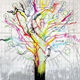
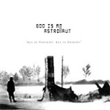
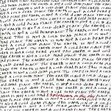
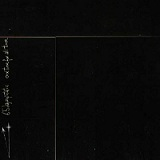

Vamos con la tercera y penúltima entrega de nuestro especial V Aniversario SBS. Los siguientes 13 discos de nuestra lista para todos vosotros. Esperamos que os sigan entreteniendo y seguro que al menos encontrais algún disco afín a nuestros gustos:
Primera entrega
Segunda entrega
————————————————————-
23. August burns red – Constellations
 Nos encontramos con uno de los discos más punteros del metalcore dentro de las votaciones. Vital fue el momento en que August Burns Red editó este trabajo y vital también la técnica que el grupo volcó en el mismo. Podríamos hablar de que en el 2009, año en que se editó Constellations, se llegó a un punto clave para este tipo de música pues el género necesitaba dar un cambio y expandirse hacia otros terrenos. En dicho año convivieron discos muy técnicos como Constellations, los grupos ingleses venían pegando fuerte (Architects, The Eyes of a Traitor) y los ritmos sampleados de The Devil Wears Prada comenzaban a hacerse un hueco también entre los seguidores de este género. Los cristianos August Burns Red compilaron un disco que no solo atrajo a un público concreto, logró encandilar también a gente ajena al género gracias al impresionante buen hacer de estos americanos, sus melodías y el haber creado un disco realmente variado a la vez que épico. Sin duda el haber llegado a tanta gente con temas como Existence, Meridian o Crusades fue la clave del éxito. (Mcore)
Nos encontramos con uno de los discos más punteros del metalcore dentro de las votaciones. Vital fue el momento en que August Burns Red editó este trabajo y vital también la técnica que el grupo volcó en el mismo. Podríamos hablar de que en el 2009, año en que se editó Constellations, se llegó a un punto clave para este tipo de música pues el género necesitaba dar un cambio y expandirse hacia otros terrenos. En dicho año convivieron discos muy técnicos como Constellations, los grupos ingleses venían pegando fuerte (Architects, The Eyes of a Traitor) y los ritmos sampleados de The Devil Wears Prada comenzaban a hacerse un hueco también entre los seguidores de este género. Los cristianos August Burns Red compilaron un disco que no solo atrajo a un público concreto, logró encandilar también a gente ajena al género gracias al impresionante buen hacer de estos americanos, sus melodías y el haber creado un disco realmente variado a la vez que épico. Sin duda el haber llegado a tanta gente con temas como Existence, Meridian o Crusades fue la clave del éxito. (Mcore)
22. Architects – Hollow Crown
 Algunos dirán que no es el mejor disco de estos ingleses, quizás estén en lo cierto, pero lo que es innegable es que esa mezcla que lograron de su sobria técnica de antaño y la nueva vertiente melódica de su música supuso un genial golpe de impacto que no solo encandiló a sus seguidores. Con Hollow Crown se pone fin a una gran trayectoria para un grupo que quiso evolucionar su música hacia terrenos más populares. Con este disco se produjo el curioso efecto de como algunos miembros de nuestro blog comenzaron a mirar con mejores ojos a este género. Llamó la atención la genial técnica de estos ingleses, el cierto aire hardcore de algunos de sus temas y la gran voz de Sam Carter. El metalcore necesitaba de discos como estos y como ya dije, el impacto fue grandioso. Early Grave, In Elegance, We’re All Alone o Dead March suelen rondar nuestros reproductores de vez en cuando consiguiendo que al menos Llanero Solitario no tenga que ser ingresado de urgencia. (Mcore)
Algunos dirán que no es el mejor disco de estos ingleses, quizás estén en lo cierto, pero lo que es innegable es que esa mezcla que lograron de su sobria técnica de antaño y la nueva vertiente melódica de su música supuso un genial golpe de impacto que no solo encandiló a sus seguidores. Con Hollow Crown se pone fin a una gran trayectoria para un grupo que quiso evolucionar su música hacia terrenos más populares. Con este disco se produjo el curioso efecto de como algunos miembros de nuestro blog comenzaron a mirar con mejores ojos a este género. Llamó la atención la genial técnica de estos ingleses, el cierto aire hardcore de algunos de sus temas y la gran voz de Sam Carter. El metalcore necesitaba de discos como estos y como ya dije, el impacto fue grandioso. Early Grave, In Elegance, We’re All Alone o Dead March suelen rondar nuestros reproductores de vez en cuando consiguiendo que al menos Llanero Solitario no tenga que ser ingresado de urgencia. (Mcore)
21. Slipknot – Iowa
 Suele decirse que los artistas y bandas hacen sus mejores trabajos cuando pasan por sus peores momentos, y sin duda eran malos tiempos para los enmascarados de Des Moines. Drogas, alcohol y problemas internos se ven reflejados en este trabajo: la voz de Corey Taylor y su forma de cantar se volvieron mucho más agresivas, así como las composiciones; los temas eran más directos y pesados a diferencia del homónimo, en el que el nu metal estaba por doquier; afinaciones más graves y un ambiente realmente oscuro que destaca en las atmósferas que se crean en Gently o Skin Ticket. En Iowa, Slipknot volcaron todo lo que tenían dentro, y tras más de una década, toda esa rabia permanece intacta. (nooneissafe)
Suele decirse que los artistas y bandas hacen sus mejores trabajos cuando pasan por sus peores momentos, y sin duda eran malos tiempos para los enmascarados de Des Moines. Drogas, alcohol y problemas internos se ven reflejados en este trabajo: la voz de Corey Taylor y su forma de cantar se volvieron mucho más agresivas, así como las composiciones; los temas eran más directos y pesados a diferencia del homónimo, en el que el nu metal estaba por doquier; afinaciones más graves y un ambiente realmente oscuro que destaca en las atmósferas que se crean en Gently o Skin Ticket. En Iowa, Slipknot volcaron todo lo que tenían dentro, y tras más de una década, toda esa rabia permanece intacta. (nooneissafe)
20. Rosetta – A Determinism Of Morality
Rosetta es una banda que venimos siguiendo desde su ya memorable The Galilean Satellites, un disco en el que el sludge más pesado se daba cita con el noise-drone para crear un monstruo de mil capas. En este A Determinism of Morality cambiaron el chip para dar temas más cortos y directos, pero de una intensidad que emociona hasta lo más hondo. Gracias a su actitud hardcore y un directo memorable, Rosetta han sabido hacerse un hueco propio en un sonido demasiado explotado con una mezcla de post rock y sludge explosiva, aderezada con una técnica de otro planeta que hace de este A Determinism of Morality un disco bello y contundente al mismo tiempo. Lo mejor del disco: Je N’en Connais Pas la Fin, con uno de los crescendos más épicos que recordemos y el tema que da nombre al álbum, envolvente y misterioso hasta el estallido final. Pocas bandas hemos vivido tanto en directo como ellos. (Llanero solitario)
{kind=link}
19. Mastodon – Crack the Skye
 Mastodon siempre han sido las eternas promesas de convertirse en las próxima leyendas del metal, la próxima banda adorada de forma casi unánime por todos los fans de los sonidos más duros. Blood Mountain o Leviathan son discos de una calidad altísima, pero les faltaba un trabajo digno de ser recordado para siempre. No sé si la banda tenía esa idea en la cabeza cuando hicieron este Crack The Skye (lo dudo), pero con él consiguieron ese requisito que les faltaba. En su disco más ambicioso hasta la fecha, Mastodon abrazan las corrientes más progresivas del metal para crear temas rebosantes de técnica, pero sin caer en el tedio ni perder fuerza por el camino. Algo más melódicos de lo que nos tenían acostumbrados deciden potenciar su punto fuerte (su habilidad con los instrumentos) para dejarnos uno de los mejores discos de metal de los últimos años. Imperdible la canción homónima con la colaboración de Scott Kelly de Neurosis. (Tharandur)
Mastodon siempre han sido las eternas promesas de convertirse en las próxima leyendas del metal, la próxima banda adorada de forma casi unánime por todos los fans de los sonidos más duros. Blood Mountain o Leviathan son discos de una calidad altísima, pero les faltaba un trabajo digno de ser recordado para siempre. No sé si la banda tenía esa idea en la cabeza cuando hicieron este Crack The Skye (lo dudo), pero con él consiguieron ese requisito que les faltaba. En su disco más ambicioso hasta la fecha, Mastodon abrazan las corrientes más progresivas del metal para crear temas rebosantes de técnica, pero sin caer en el tedio ni perder fuerza por el camino. Algo más melódicos de lo que nos tenían acostumbrados deciden potenciar su punto fuerte (su habilidad con los instrumentos) para dejarnos uno de los mejores discos de metal de los últimos años. Imperdible la canción homónima con la colaboración de Scott Kelly de Neurosis. (Tharandur)
18. God Is An Astronaut – All Is Violent, All Is Bright
Qué decir de este disco… y de este grupo. Otrora bendecidos y admirados por la práctica totalidad de nosotros… hoy día escuchados por apenas unos pocos. Culpa de ello la tiene el propio grupo evidentemente, estancados continuamente en el mismo sonido y sin lograr llamarnos la atención en mucho tiempo, ¿Pero que supuso All Is Violent, All Is Bright para nosotros? Nada más y nada menos la inspiración para darnos el nombre que orgullosamente luce nuestro querido blog (Suicide By Star, séptimo tema del disco). El segundo trabajo de estos irlandeses fie una gran obra en su tiempo, cuando el post-rock se convertía en género de culto y las bandas de este estilo comenzaban a proliferar. No hacían nada nuevo realmente pero su música nos llegó a todos nosotros y pasábamos las tardes con este disco de fondo. Fragile, Forever Lost… los diez temas del disco nos despertaron nuestra imaginación y nos evocaron mundos donde nunca podremos llegar. Posiblemente uno de los discos que con más cariño recordaremos siempre. (Mcore)
{kind=link}
17. Explosions in the Sky – The Earth is not a cold dead place
Si bien hoy en día estamos acostumbrados a incontables grupos de similar estilo, el grupo tejano marcó con el presente disco un hito en el mundo del rock. En este álbum todo se centra en emociones, cada nota, cada riff, cada golpe de batería y cada momento de silencio, parecen tener como objetivo llegar a lo más profundo posible del oyente. No hay necesidad de voces o letras, la atención no debe ser desviada. Cada uno de los 5 largos temas del disco son destacables composiciones, con sus momentos memorables e intensos clímax. Posiblemente lo mejor que haya creado el grupo hasta ahora, demuestra que con unas guitarras e imaginación, no hacen falta violines para emocionar. (Rokklagid)
{kind=link}
16. Electric Wizard – Dopethrone
 «When you get into one of these groups, there’s only a couple ways you can get out. One is death, the other is mental institutions». Con esta lapidaria frase se abre el monolítico tercer larga duración de los británicos en el que desde su inconmensurable portada discernimos el interior: rotundos temas del mejor stoner-doom jamás parido, la cúspide de una banda que pese a haber tenido sus altibajos, jamás ha estado cerca de repetir la experiencia que supuso este Dopethrone. Himnos inolvidables que nos dejaron, por citar solo dos: Funeralopolis, con uno de los riffs más cabrones de la historia, el cual ha propiciado el «engorile» de varios miembros del blog en diversos medios de locomoción (xD), y Dopehtrone, broche final para uno de los discos más psicotrópicos que ha dado el género. (Llanero solitario)
«When you get into one of these groups, there’s only a couple ways you can get out. One is death, the other is mental institutions». Con esta lapidaria frase se abre el monolítico tercer larga duración de los británicos en el que desde su inconmensurable portada discernimos el interior: rotundos temas del mejor stoner-doom jamás parido, la cúspide de una banda que pese a haber tenido sus altibajos, jamás ha estado cerca de repetir la experiencia que supuso este Dopethrone. Himnos inolvidables que nos dejaron, por citar solo dos: Funeralopolis, con uno de los riffs más cabrones de la historia, el cual ha propiciado el «engorile» de varios miembros del blog en diversos medios de locomoción (xD), y Dopehtrone, broche final para uno de los discos más psicotrópicos que ha dado el género. (Llanero solitario)
15. 65daysofstatic – One Time For All Time
¿Electrónica y rock instrumental juntos y dando caña? Esto es un cóctel que no podía fallar en SBS. Puede que su disco predecesor fuera mejor si cabe, puede que lo que hacen ahora les otorgue más éxito, pero One Time For All Time es el disco que nos llegó primero y el que grabó a fuego en nuestras cabezas temas como Await Rescue o Radio Protector. Qué decir de un grupo que ha creado escuela y que ha sabido distanciarse tanto de un género ya saturado. One Time For All Time nos ha brindado grandes recuerdos en nuestro primer año de blog y en nosotros se mantiene la espinita de no haberlos visto nunca en directo, al menos como cabeza de cartel. Nunca les perderemos de vista gracias a este disco. (Mcore)
{kind=link}
14. QOTSA – Songs For The Deaf
 Es difícil plantearse que QOTSA contaran con un mejor plantel para este disco: Nick Olivieri todavía a las 4 cuerdas, Dave Grohl dando una lección de cómo destrozar parches y Mark Lanegan acompañando generosamente a Josh Homme en las voces. Songs for the Deaf fue un éxito comercial rotundo por singles tan pegadizos y arrebatadores como No One Knows, Go With the Flow o First It Giveth, si bien dentro del disco el nivel queda intacto. Aunque Homme mantiene que todo el disco es conceptual —la inspiración surgió en unos viajes por el desierto escuchando radios en español— la variedad de temas es muy amplia, no obstante baladas con la voz rota de Lanegan y otros temas de abrasdores riffs con Olvieri desgañitándose justifican completamente el método. (rememorama)
Es difícil plantearse que QOTSA contaran con un mejor plantel para este disco: Nick Olivieri todavía a las 4 cuerdas, Dave Grohl dando una lección de cómo destrozar parches y Mark Lanegan acompañando generosamente a Josh Homme en las voces. Songs for the Deaf fue un éxito comercial rotundo por singles tan pegadizos y arrebatadores como No One Knows, Go With the Flow o First It Giveth, si bien dentro del disco el nivel queda intacto. Aunque Homme mantiene que todo el disco es conceptual —la inspiración surgió en unos viajes por el desierto escuchando radios en español— la variedad de temas es muy amplia, no obstante baladas con la voz rota de Lanegan y otros temas de abrasdores riffs con Olvieri desgañitándose justifican completamente el método. (rememorama)
13. Portishead – Dummy
 Portishead debutaron en 1994 con una de las piezas claves de ese pastiche musical llamado trip-hop, y el que quizás sea uno de los mejores debuts de los noventa. El minimalismo de su música se funde con la maravillosa voz de Beth Gibbons, que derrocha pasión y sentimientos como pocas. Puesto merecido para un disco que es capaz de hacer sonar scratches sin que se te caiga el monóculo en la taza de té. (Tharandur)
Portishead debutaron en 1994 con una de las piezas claves de ese pastiche musical llamado trip-hop, y el que quizás sea uno de los mejores debuts de los noventa. El minimalismo de su música se funde con la maravillosa voz de Beth Gibbons, que derrocha pasión y sentimientos como pocas. Puesto merecido para un disco que es capaz de hacer sonar scratches sin que se te caiga el monóculo en la taza de té. (Tharandur)
12. Have A Nice Life – Deathconciousness
 El trabajo casero puede dar tan buenos resultados como el de los estudios mejor condicionados: este es uno de los principios de Dan Barrett y Tim Macuga, miembros de Have a Nice Life. Deathconsciousness es un ejemplo claro de ello: nos encontramos ante un álbum que, sin ser muy presuntuoso, resultó rompedor desde un primer momento. A lo largo del trabajo distinguimos una fusión de influencias tales como post-punk, shoegaze, post-rock, industrial e incluso drone doom, la presencia de reverbs es algo constante; pero lo que de verdad lo hace especial es el hecho de ser, ante todo, un trabajo muy personal en que experiencias como la muerte o la religión están continuamente presentes en las letras. La primera parte del trabajo, The Plot that Broke the Plains, es la encargada de adentrarnos en el más puro frenesí con la presencia de composiciones más ambientales y uno de los temas más destacados del álbum, Bloodhail; en The Future, la segunda parte, vemos una tónica algo más post-punk, compensando un poco la tranquilidad inicial. El conjunto resulta inspirador, hipnótico y original; por ello, ha sido y es uno de los trabajos que más ha dado que hablar en SBS. (arashi)
El trabajo casero puede dar tan buenos resultados como el de los estudios mejor condicionados: este es uno de los principios de Dan Barrett y Tim Macuga, miembros de Have a Nice Life. Deathconsciousness es un ejemplo claro de ello: nos encontramos ante un álbum que, sin ser muy presuntuoso, resultó rompedor desde un primer momento. A lo largo del trabajo distinguimos una fusión de influencias tales como post-punk, shoegaze, post-rock, industrial e incluso drone doom, la presencia de reverbs es algo constante; pero lo que de verdad lo hace especial es el hecho de ser, ante todo, un trabajo muy personal en que experiencias como la muerte o la religión están continuamente presentes en las letras. La primera parte del trabajo, The Plot that Broke the Plains, es la encargada de adentrarnos en el más puro frenesí con la presencia de composiciones más ambientales y uno de los temas más destacados del álbum, Bloodhail; en The Future, la segunda parte, vemos una tónica algo más post-punk, compensando un poco la tranquilidad inicial. El conjunto resulta inspirador, hipnótico y original; por ello, ha sido y es uno de los trabajos que más ha dado que hablar en SBS. (arashi)
11. Alice In Chains – Dirt
 De los cuatro Big 4 del grunge es posible que Alice In Chains sea quizás el que menos repercusión mediática tuvo en su momento. Por desgracia eso me hizo descubrirlos demasiado tarde, cuando ya había pasado bastante tiempo del lanzamiento de Dirt, disco que expresa como pocos el sentimiento de ahogo, sufrimiento y desesperación de una persona, Layne Staley, inmerso en el infierno de la heroína. Imprimiendo las influencias más metálicas en las guitarras de Jerry Cantrell, dejando posos de sludge con las cadencias pesadas y sombrías de su sección rítmica, y contando la privilegiada y personal voz de Staley, Dirt se convierte automáticamente en clásico básico incluso para el público más orientado hacia terrenos más metaleros. (rememorama)
De los cuatro Big 4 del grunge es posible que Alice In Chains sea quizás el que menos repercusión mediática tuvo en su momento. Por desgracia eso me hizo descubrirlos demasiado tarde, cuando ya había pasado bastante tiempo del lanzamiento de Dirt, disco que expresa como pocos el sentimiento de ahogo, sufrimiento y desesperación de una persona, Layne Staley, inmerso en el infierno de la heroína. Imprimiendo las influencias más metálicas en las guitarras de Jerry Cantrell, dejando posos de sludge con las cadencias pesadas y sombrías de su sección rítmica, y contando la privilegiada y personal voz de Staley, Dirt se convierte automáticamente en clásico básico incluso para el público más orientado hacia terrenos más metaleros. (rememorama)
Agradecemos la iniciativa a “El Chaman”, forero encargado de llevar las votaciones.
Continuará…
Apoyános